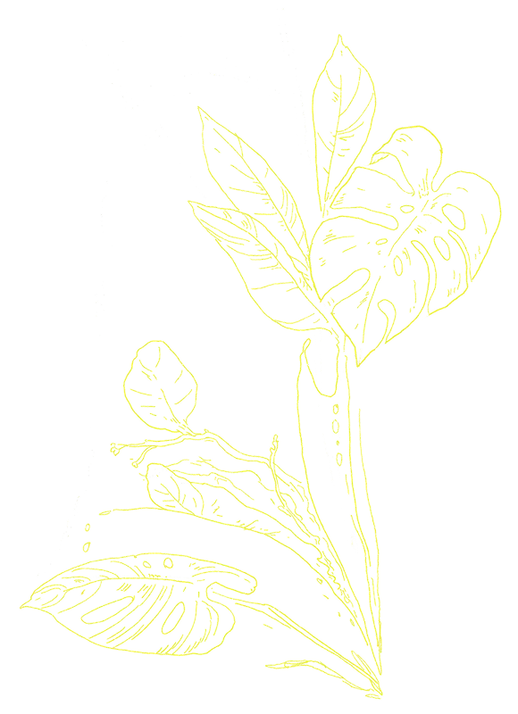

Лес крепче топоров
Представьте себе древний, могучий лес. Он растет столетиями, его корни глубоко уходят в землю, соединяясь в невидимой сети, питающей каждое дерево. В этом лесу есть свои правила, свой ритм жизни, свои тайные тропы, по которым идут только те, кто знает, как их увидеть.
Но есть те, кто боится леса. Они видят в нем что-то чуждое, темное, непонятное. Им кажется, что в его чащах что-то скрывается, что деревья стоят слишком близко друг к другу, что тень слишком густая. Они приходят с топорами, вырубают просеки, ставят заборы и предупреждающие таблички: «Природой не предусмотрено», «Лес должен быть правильным», «Настоящие деревья растут по-другому», «Все это лесная пропаганда». Им хочется, чтобы лес был редким, прирученным, посаженным по линейке. Чтобы деревья росли ровно, не сплетались кронами, не создавали теней.
Иногда они пытаются пересадить деревья из леса в свои парки. Но в парках деревья растут иначе. Они стоят отдельно, их кроны обрезаны, а корни не могут переплетаться друг с другом. И в этом одиночестве дерево уже не то же самое. Оно становится декоративным, удобным для восприятия, но больше не живет свою собственную жизнь.
Лесофобия — это страх перед разнообразием, перед естественным порядком вещей. Это попытка сделать так, чтобы лес был незаметен, чтобы он казался случайностью, редкостью. Чтобы деревья боялись расти рядом.
Иногда у тех, кто чувствует себя частью леса, просто нет возможности его исследовать. Добраться до леса непросто — лес огражден высоким забором, а пути к нему заколочены запретами и усыпаны проверочными постами. Воздух пропитан тревогой, а каждое движение на пути сопровождается угрозами. Мир делает все, чтобы лес оставался невидимым, а тем, кто хочет его найти, приходилось идти на риск.
Если бы у каждого была возможность заглянуть в чащу, многие обнаружили бы, что сами – часть леса. Они увидели бы, как их корни уже давно тянутся в глубину, как их ветви естественно сплетаются с другими, как они чувствуют себя по-настоящему свободными среди таких же деревьев.
Но лес всегда рядом. Его семена разносятся ветром, корни пробиваются даже сквозь бетон. Там, где вырубают рощу, через несколько лет снова поднимаются молодые побеги. Лес сильнее топоров.
Если ты знаешь этот лес, если чувствуешь его силу — ты понимаешь. 🌱
